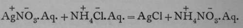
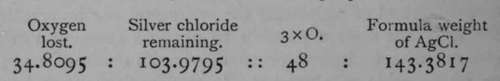
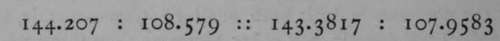

Methods Of Determining The Equivalents Of Elements
Description
This section is from the book "Modern Chemistry", by William Ramsay. Also available from Amazon: Modern Chemistry: Theoretical and Modern Chemistry (Volume 2).
Methods Of Determining The Equivalents Of Elements
It is not always necessary to determine both constituents of the compound; for example, the ratio of silver to chlorine can be found by dissolving a known weight of pure silver in nitric acid, and then adding to the solution some soluble chloride, such as hydrogen chloride ; silver chloride is then precipitated thus:—

The silver chloride is collected on a filter, thoroughly washed, and after being dried, weighed. The Belgian chemist, Stas, working in this way, obtained from 108.579 grams of silver 144.207 grams of silver chloride. The relation between the atomic weight of oxygen, taken as the standard and placed equal to 16, and the formula-weight of silver chloride was ascertained by heating to redness 138.789 grams of silver chlorate, 2AgClO3 = 2AgCl + 3O9; the weight of the residual silver chloride was 103.9795 grams, and that of the oxygen evolved taken as difference is 34.8095. The proportion— gives the formula weight of silver chloride. The proportion of silver it contains is found by the equation— .
Subtracting from 143.3817 the weight of the silver it contains, 107.9583, the remainder is the atomic weight of chlorine, which, for reasons already given, is identical with its equivalent, namely, 35.4234; and 107.96 is the equivalent of silver.
Knowing these facts, the atomic weight of, say, barium may be determined by dissolving a known weight of its chloride in water, and adding to the solution a solution of silver nitrate, so as to obtain a precipitate of silver chloride, which can be weighed, and from it the weight of the chlorine in the barium chloride deduced. Subtracting this from the weight of the barium chloride taken, the remainder is the equivalent of barium. To determine whether or not this number is identical with its atomic weight, a determination of its specific heat must be made, as described on p. 14.
In some instances the process is a more direct one. To determine the equivalent of nickel, a weighed quantity of the metal has been heated in oxygen, and the gain in weight noted. Then, as this weight is to the weight of nickel taken, so is the equivalent of oxygen to that of nickel.
These examples will suffice to give a general idea of the processes used in determining atomic weights, though, as before stated, each element requires special treatment, and the selection of the best method is often a very difficult task. It is usual, moreover, to make determinations by several methods, if that be possible, so as to avoid any permanent source of error. Many observers, too, have made such determinations, and it is not always easy to eliminate a personal element from the results which they give. A committee of the German Chemical Society has recently published a table of atomic weights, reproduced below (with a few alterations and additions), in which the last digit of each number may in all probability be accepted as correct. A second column is added, containing the atomic volumes of the elements, so far as they are known. They represent the volumes in cubic centimeters occupied by the atomic weight of the element taken in grams, thus—197.2 grams of gold occupy 10.2 cubic centimeters. As the elements expand on rise of temperature, these results are not always comparative, but at present they are the best that can be obtained.
Table Of Atomic Weights And Atomic Volumes
Atomic | Atomic | ||
Weight. | Volume. | ||
Aluminium | . Al | 27.1 | 10.1 |
Antimony. | . Sb | I 20 | 17.9 |
Argon | . A | 39-9 | 32-9 |
. As | 75 | J3-3 | |
Barium | . Ba | 137.1 | |
Beryllium . | . Be | 9.1 | 4.3 |
Bismuth . | . Bi | 208.5 | 2 T.2 |
Boron | . B | 11.0 | 4.1 |
Bromine . | . Br | 79.96 | 25.I |
Cadmium . | . Cd | 112 | I3.O |
Caesium | Cs | *33 | |
Calcium . | Ca | 40 | 25-3 |
Carbon | . c | 12.00 | 3-4 |
Cerium | Ce | 140 | 20.8 |
Chlorine . | . CI | 35-45 | |
Chromium | . Cr | 52.1 | 7-7 |
Cobalt | Co | 59.0 | 6.7 |
Copper | Cu | 63.6 | 7-i |
Erbium | . Er | 166 ? | |
Fluorine . | . F | 19 | |
Gadolinium | . Gd | 156 | |
Gallium | Ga | 70 | 11.8 |
Germanium | Ge | 72 | |
Gold | . Au | 197.2 | 10.2 |
Helium | . He | 4 | |
Hydrogen. | . H | 1.007 | |
Indium | . In | 114 | 25.7' |
Iridium | . Ir | 193.O | 8.6 |
Iodine | . I | 126.85 | 25.7 |
Iron | . Fe | 56.0 | 6.6 |
Krypton . | • | 81.5 | 37.* |
Lanthanum | La | 138 | 22.9 |
Atomic | Atomic | ||
Weight. | Volume. | ||
Lead | . Pb | 206.9 | 18.2 |
Lithium . | . Li | 7.03 | II.9 |
Magnesium | . Mg | 24.36 | 13-3 |
Manganese | . Mn | 55.O | 7-7 |
Mercury . | • Hg | 200.3 | 14.8 |
Molybdenum | . Mo | 96.O | |
Neodymium | . Nd | H3.5 | |
Neon | . Ne | 20 | |
Nickel | . Ni | 58.7 | 6.7 |
Niobium . | . Nb | 94 | 14.5 |
Nitrogen . | . N | 14.04 | |
Osmium . | . Os | 191 | 8.9 |
Oxygen . | . 0 | 16.000 | (standard) |
Palladium . | . Pd | 106 | 9-3 |
Phosphorus | . P | 31.0 | 17.0 |
Platinum . | . Pt | 195.2 | 9.1 |
Potassium . | . K | 39-x4 | 45-5 |
Praseodymium . | . Pr | 141 | |
Rhodium . | . Rh | 103.0 | 9-5 |
Rubidium . | . Rb | 85.4 | 56-3 |
Ruthenium | . Ru | 101.7 | 9.2 |
Samarium . | Sm | 150 | |
Scandium . | . Sc | 44 | |
Selenium . | . Se | 79.1 | 18.5 |
Silicon | . Si | 28.4 | 11.4 |
Silver | - Ag | 107-93 | 10.3 |
Sodium | . Na | 23.05 | 23-7 |
Strontium . | . Sr | 87.6 | 34-5 |
Sulphur | . S | 32.06 | i5-7 |
Tantalum . | . Ta | 183 | 17.0 |
Tellurium . | . Te | 127.6 | 20.3 |
Thallium . | . Tl | 204.1 | 17.2 |
Thorium . | . Th | 232 | 29.8 |
Thulium . | . Tu | 170 ? | |
Tin . | . Sn | 119.0 | 16.2 |
Atomic | Atomic | ||
• Weight. | Volume. | ||
Titanium . | . Ti | 48. T | |
Tungsten . | . W | 184 | 9.6 |
Uranium . | . U | 24o | 13.O |
Vanadium . | . V | 51.2 | 9-3 |
Xenon | . X | 128 | 35-9 |
Ytterbium . | . Yb | x73 | |
Yttrium | . Y | 89 | |
Zinc | . Zn | 65.4 | 9-5 |
Zirconium | . Zr | 90.6 | 21.9 |
Molecular Weights Of The Elements
The molecular weights of some of the elements have been successfully determined; in certain cases by their density in the gaseous state, in others by the lowering of the vapour-pressure of mercury, caused by the presence of a known weight of a dissolved metal, and again in others by the depression of the freezing-point of certain metals, caused by the presence of others in known amount. These will be considered in their order.
Continue to:
- prev: Chapter V. Methods Of Determining The Equivalents Of The Elements Of Ascertaining their Molecular Weights—Allotropy
- Table of Contents
- next: Vapour Densities Of Elements